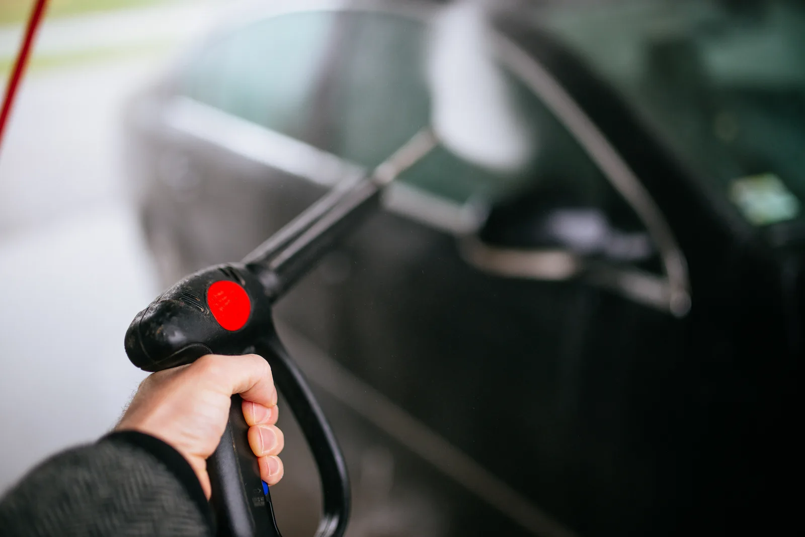
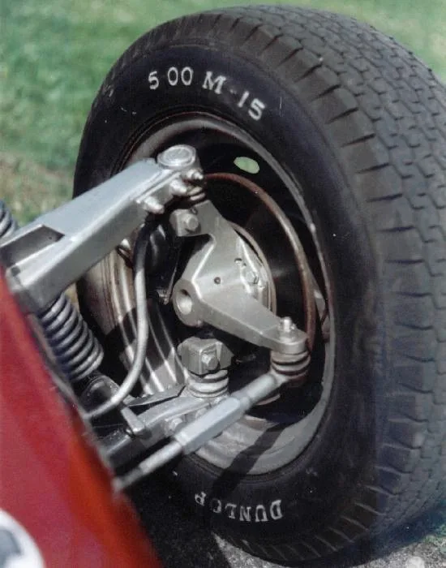

▲ 언더코팅(방청 코팅)은 세차만으로 막기 어려운 부식을 지연시키는 보조 수단이지만, 세차 빈도 자체를 대신하지는 못한다
세차를 '어떻게' 하느냐를 두고는 이미 많은 이야기가 오간다. 손세차냐 자동세차냐, 브러시가 스크래치를 내느냐 마느냐. 하지만 정작 차량 하부 부식과 도장 수명을 좌우하는 건 세차 방법보다 '언제, 얼마나 자주' 하느냐라는 시각도 있다. 특히 겨울철 도로에 뿌려지는 제설제(염화칼슘)에 노출된 뒤 며칠 안에 세차하느냐가 하부 부식 속도를 크게 좌우한다는 게 정비 업계의 오래된 상식이다. 방법론이 아니라 '타이밍'에 초점을 맞춰 세차 빈도와 차량 수명의 관계를 정리했다.
1. 왜 '방법'보다 '빈도·타이밍'이 중요한가

▲ 겨울철 결빙·제설 구간을 달린 차량은 하부에 제설제 성분이 남아있을 가능성이 높다
카프리즘이 앞서 다룬 세차 방법별 스크래치 위험 비교 기사에서는 '어떻게 닦느냐'에 따른 도장면 손상 차이를 살펴봤다. 이번에는 다른 질문을 던진다. 손세차든 자동세차든 셀프세차든, 애초에 세차를 언제, 얼마나 자주 하느냐가 부식과 수명 측면에서는 방법 차이보다 더 크게 작용한다는 것이다. 여름철 바닷가 염분 노출 뒤 하부세차가 중요하다는 점은 이미 다룬 바 있다. 이번 글은 그보다 훨씬 흔하게, 매년 겨울마다 반복되는 제설제 노출 이후의 세차 타이밍에 초점을 맞췄다.
2. 제설제(염화칼슘)가 유독 무서운 이유
겨울철 도로에 뿌려지는 제설제의 주성분인 염화칼슘은 자기 무게의 최대 14배에 달하는 수분을 빨아들이는 강한 흡습성 물질이다. 기온이나 습도가 낮은 날씨에도 차체 표면과 하부를 계속 젖은 상태로 유지시켜, 일반적인 빗물 노출보다 부식을 훨씬 빠르게 진행시킨다. 이 부식 원리 자체는 카프리즘이 앞서 다룬 가을철 하부세차 기사에서 여름철 바닷물 염분과 함께 자세히 짚었다(관련 기사 바로가기). 이번 글에서 주목하는 지점은 원리보다 '타이밍'이다. 문제는 염화칼슘 성분이 눈에 잘 띄지 않는다는 점이다. 도로 위 눈이 녹고 나면 마른 흰색 가루 자국처럼 남는데, 대수롭지 않게 보여 방치하기 쉽다. 업계에서는 이렇게 방치된 염화칼슘이 통상 3개월 안팎이 지나면 붉은 녹으로 번지는 사례가 보고된다고 본다. 서스펜션 틈새나 프레임 접합부처럼 물기가 잘 마르지 않는 구조에 스며든 경우에는 이보다 더 빠르게 진행될 수 있다.
제설제 vs 여름철 바닷물 염분 — 무엇이 다른가
- 바닷물 염분: 휴가철 등 특정 시기에 일시적으로 노출, 노출 빈도가 상대적으로 낮다
- 제설제(염화칼슘): 겨울철 내내 반복적으로 도로에 살포돼 노출 빈도와 누적량이 훨씬 많다
- 흡습성 차이: 염화칼슘은 자체 무게의 최대 14배 수분을 흡수해 마른 상태를 유지하기 더 어렵다
3. 골든타임 3일 — 얼마나 자주 세차해야 하나

▲ 부식이 장기간 방치되면 표면 전체로 번져 복원이 어려운 수준에 이를 수 있다 (부식 진행 예시)
정비 업계에서 통용되는 기준은 제설제가 뿌려진 도로를 달렸다면 3일 이내에 세차하라는 것이다. 매일 눈이 오거나 도로에 제설제가 남아있는 시기라면, 평소보다 세차 주기를 훨씬 좁혀 잡아야 한다는 뜻이다. 이는 평상시 권장되는 세차 주기와는 결이 다르다. 평소 도장 관리 차원에서는 2주에 한 번 정도의 세차로 충분하다는 게 일반적인 권장 기준이지만, 제설제에 노출된 경우에는 이 주기를 무시하고 즉시, 최소 3일 안에는 씻어내는 것이 부식을 늦추는 핵심이라는 게 정비 업계의 공통된 조언이다. 전체 세차가 여의치 않다면 눈에 잘 띄지 않는 하부만이라도 먼저 씻어내는 것이 효과적이다.
| 상황 | 권장 세차 주기 | 근거 |
|---|---|---|
| 평상시(도장 관리 목적) | 약 2주에 1회 | 일반적인 세차 업계 권장 기준 |
| 제설제 살포 도로 주행 직후 | 3일 이내(가급적 즉시) | 염화칼슘 흡습성으로 인한 부식 가속 방지 |
| 여름철 바닷가·계곡 방문 직후 | 1~2주 이내 | 염분 노출 후 하부 부식 방지 |
| 장마철 | 2주 간격 안팎 | 습도 상승에 따른 부식 위험 증가 |
※ 세차 업체·차종·거주 지역에 따라 세부 권장치는 달라질 수 있다.

▲ 셀프세차장의 고압수 건은 하부 틈새에 낀 제설제 잔여물을 씻어내는 데 유용하다
여기서 오해하지 말아야 할 것은 '세차를 자주 하면 오히려 도장에 안 좋다'는 통념이다. 이 말은 일반적인 상황, 즉 특별한 오염물 없이 습관적으로 자주 닦는 경우에 세차용 브러시나 극세사 타월이 미세 스크래치를 남길 수 있다는 맥락에서 나온 얘기다. 하지만 제설제 노출처럼 부식성 물질이 하부에 붙어 있는 상황에서는 얘기가 다르다. 스크래치는 표면적인 도장 손상이지만, 부식은 금속 자체를 갉아먹어 되돌리기 어렵다. 노출 상황에 따라 '자주 씻는 게 무조건 나쁘다'는 통념을 그대로 적용해서는 안 되는 이유다.
농민신문 염화칼슘 세차 가이드에서 확인 가능4. 언더코팅과 완성차 방청보증 — 세차를 대신할 수 있을까
세차만으로 부식을 완전히 막을 수는 없다 보니, 정비소에서 방청제를 도포하는 언더코팅(방청 코팅)을 권하는 경우가 많다. 세척 후 방청 코팅막을 입히는 방식으로, 비용은 차종과 시공 범위에 따라 수만~십만 원대다. 다만 언더코팅은 부식이 진행되는 속도를 늦추는 보조 수단이지, 세차 자체를 대신하는 것은 아니다. 코팅막 밑에 이미 염화칼슘이나 습기가 남아있다면 오히려 밀폐된 공간에서 부식이 더 진행될 수 있다는 지적도 있다. 완성차 업체가 제공하는 보증 제도도 참고할 만하다. 국내 완성차 업체는 통상 일반 보증 3년/6만km, 파워트레인 보증 5년/10만km를 기본으로 제공한다. 부식 관련 보증은 두 단계로 나뉘는 경우가 많은데, 표면 녹을 포함한 일반 부식 보증은 3년/6만km 수준인 반면, 차체에 구멍이 뚫리는 '관통 부식'에 한해서는 주행거리 제한 없이 7년까지 보증하는 브랜드가 있다. 다만 관통 부식 보증이라도 제조 결함이 원인인 경우에 한정되는 것이 일반적이어서, 제설제 방치처럼 관리 소홀로 생긴 부식까지 보장해주지는 않는다는 점을 유의해야 한다.

▲ 서스펜션 암·프레임 접합부처럼 물기가 잘 마르지 않는 구조는 방청 코팅 후에도 내부에 습기가 남으면 부식이 더 빨리 진행될 수 있다
방청보증, 이런 점을 확인하자
- 보증 대상이 '관통 부식(구멍이 뚫리는 수준)'인지, 표면 녹까지 포함하는지 확인한다
- 기간·주행거리 중 먼저 도래하는 시점까지만 보증이 적용된다
- 세차·하부 관리 소홀이 원인으로 판단되면 보증에서 제외될 수 있다
5. 겨울철 체크리스트 — 제설제 시즌에 챙길 것

▲ 전체 세차가 여의치 않다면 셀프세차장에서 하부 위주로라도 제설제 잔여물을 씻어내는 것이 좋다
결국 핵심은 단순하다. 제설제가 뿌려진 도로를 달렸다면 평소 세차 주기와 별개로 되도록 빨리, 3일을 넘기지 말고 하부라도 씻어내는 것이다. 아래 체크리스트로 겨울철 관리 습관을 점검해볼 수 있다.
겨울철 세차 체크리스트
- 제설제가 뿌려진 구간을 달렸다면 3일 안에 하부세차부터 우선 진행한다
- 차량 하부를 스마트폰 플래시로 비춰 흰색 결정이나 붉은 녹 흔적이 있는지 확인한다
- 평상시에는 2주에 한 번 정도 세차로 충분하지만, 제설철에는 이 주기를 무시하고 노출 즉시 씻어낸다
- 노후 차량이나 적설량이 많은 지역 거주자라면 방청(언더코팅) 시공과 보증 조건을 함께 검토한다
- 완성차 업체의 부식보증 범위(관통 부식 한정 여부, 기간)를 미리 확인해둔다
정리
체크포인트
- 세차 방법보다 '언제, 얼마나 자주' 하느냐가 하부 부식과 도장 수명에 더 크게 작용한다
- 제설제(염화칼슘)는 흡습성이 강해 방치 시 통상 3개월 안팎이면 붉은 녹으로 번질 수 있어, 노출 후 3일 이내 세차가 권장된다
- '세차를 자주 하면 안 좋다'는 통념은 일반적인 상황 얘기이며, 부식성 물질 노출 후에는 오히려 빨리 씻어내는 것이 맞다
- 언더코팅은 부식을 늦추는 보조 수단일 뿐 세차를 대신하지 못하며, 완성차 부식보증은 통상 관통 부식에 한정돼 관리 소홀분은 보장하지 않는다